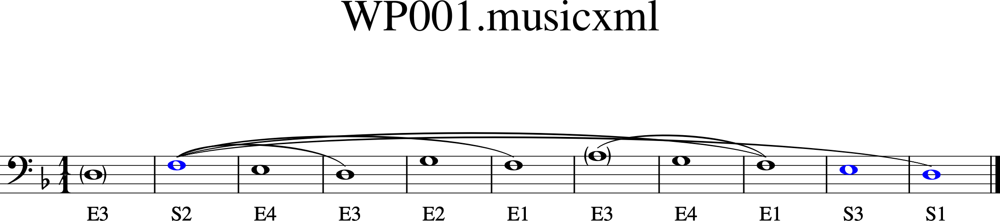

Getting Started¶
First Questions¶
What music theory do I need to know? Users who are familiar with traditional species counterpoint may only need to consult Westergaard’s rules:
If you are new to species counterpoint, you may find the following guide of use:
A Brief Introduction to Westergaardian Species Counterpoint [in preparation]
What software do I need to install to run the project on my own system?
Python
WesterParse
a music notation program like MuseScore
I just want to play around with it. Is there a website I can use instead of installing all this stuff? Yes.
Westegaardian Species Counterpoint Online: https://talus.artsci.wustl.edu/counterpoint_tester/
Where can I find more information about using the program?
An Example¶
Compose an exercise in music notation software or on the project website. Save the exercise in MusicXML format. Run the line parser or voice-leading checker. In the case of the parser, you have the option of seeing the results displayed in musical notation. Otherwise you will see a text report.
Let’s say you notate Fux’s well-known Dorian cantus firmus using your favorite notation software:

You can then ask WesterParse to parse the line:
>>> from westerparse import *
>>> source = 'usage/sampledocs/FuxDorian.musicxml'
>>> evaluateLines(source,
... show='show',
... partLineType='primary',
... report=True)
The program infers the key of D minor and attempts to parse the line as a primary upper line. There are two possible interpretations (actually, there are a few more, but the program exercises some preferential judgment and weeds out the less plausible interpretations).
The result could take the form of a text report:
PARSE REPORT
Key inferred by program: D minor
The line is generable as a primary line.
But since the keyword show was set to ‘show’, the program will display the interpretations in a notation program.
Installation Instructions¶
[Not yet available: Download the zip file (westerparse.zip) and open it in your favorite directory.]
How to Get Support¶
If you are having issues, please contact me at: snarrenberg@wustl.edu

{kind=link}
{kind=link}